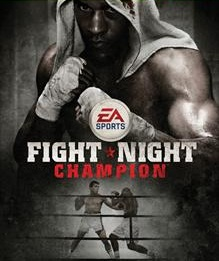

Fight Night Champion , EA Canada tarafından geliştirilen ve Electronic Arts tarafından yayınlananbir boks video oyunudur . Fight Night serisinin beşinci ve sonve Mart 2011'de PlayStation 3 ve Xbox 360 için piyasaya sürülmüştür . Oyun, "boks sporunun acımasızlığını gerçekten yansıtan" animasyonlar ve oyuncu hasarıyla "daha sert", "daha karanlık" bir ortamı tasvir ederek önceki oyunlardan sert bir dönüş alıyor. [ kaynak belirtilmeli ] Oyunun hikaye modundaki şiddet ve argo dil, Eğlence Yazılım Derecelendirme Kurulu'ndan Olgun bir derece kazandı., bunu yapan tek EA Sports unvanı.
Oyun resmi olarak 20 Temmuz 2010'da bir EA Sports stüdyosu gösterisinde açıklandı. [1] Mayıs 2018'de Xbox One'ın geriye dönük uyumlu oyunlar kataloğuna eklendi. Oyun, Şampiyon Modu adı verilen, tamamen Hollywood'dan ilham alan bir hikaye moduna sahip ilk EA Sports oyunudur. Hikaye, hapis cezası ve yozlaşmış bir dövüş organizatörü dahil olmak üzere büyük aksiliklerin üstesinden gelmek zorunda kalan yetenekli bir boksör olan Andre Bishop'ın kariyerini anlatıyor. Şampiyon Modu, boks sporunun acımasızlığını ve zorluklarını daha fazla aktarmayı amaçlamaktadır.
Oyunun konsol sürümleriyle birlikte HB Studios tarafından geliştirilen bir iOS sürümü yayınlandı.
Oyunun yeni yönü eleştirmenler tarafından büyük övgüler aldı ve oyun olumlu eleştiriler aldı.